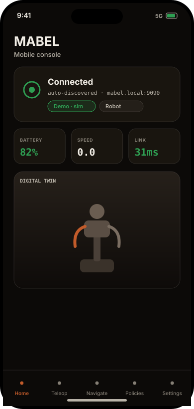
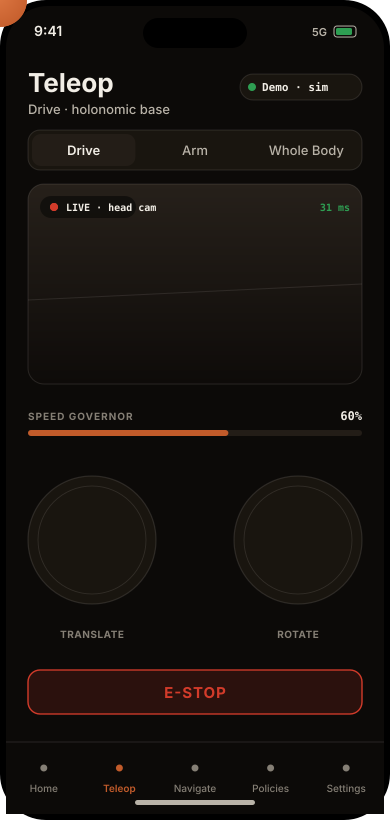

iOS · the pocket console
Your robot, in your pocket.
No headset needed. The iPhone app is the lightweight companion — drive, pose, plan, and run policies one-handed, with a live 3D twin and the same camera feeds. It auto-discovers the robot on the network and falls back to an on-device simulator, so it always has something to drive.
iPhone · driving the base, live


